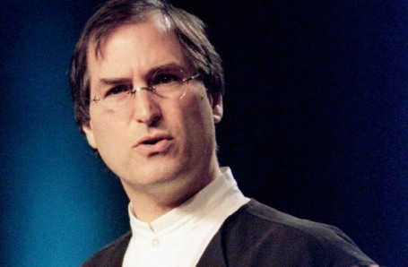

Chương 22

hi Jobs thành lập công ty máy tính NeXT vào năm 1998 cũng gây rất nhiều tiếng vang.
Nhưng năm tiếp theo, khi máy tính của NeXT chính thức xuất hiện trên thị trường, những âm ba trước đó cũng lắng dần xuống. Khả năng mê hoặc, hăm doạ và dẫn dắt báo chí của Jobs đến thời điểm này lại trở nên “lợi bất cập hại”, xuất hiện hàng loạt những câu chuyện khủng hoảng của công ty. “NeXT không có khả năng tương tác với những máy tính khác trong thời kỳ mà ngành công nghiệp này đang tiến tới những hệ thống có khả năng thay thế” phóng viên Bart Ziegler của AP đưa tin. “Chỉ một số ít phần mềm có thể chạy trên NeXT, nên rất khó thu hút được khách hàng.” NeXT cố gắng tự định vị bản thân như người dẫn đầu trong lĩnh vực mới, máy tính cá nhân dành cho những người muốn phát huy sức mạnh một công cụ làm việc lẫn sự tương tác thân thiện với người dùng của một chiếc máy tính cá nhân. Những khách hàng này thì lại đang chọn cho mình những sản phẩm của công ty phát triển nhanh Sun Microsystems. Doanh thu của NeXT vào năm 1990 là 28 triệu đô-la; doanh thu của Sun năm đó là 2,5 tỷ đô-la. IBM từ bỏ thoả thuận sử dụng phần mềm có bản quyền của NeXT, vì thế Jobs buộc lòng phải làm việc ngược với bản chất của mình: Bất chấp niềm tin sâu sắc vào sự cần thiết phải tạo mối liên hệ mật thiết giữa phần mềm và phần cứng, đến tháng Một năm 1992, ông đồng ý cung cấp bản quyền hệ điều hành NeXTSTEP để sử dụng trên những máy tính khác.
Đã có một người lên tiếng bảo vệ Jobs, lạ lùng thay, người đó chính là Jean-Louis Gassée, hai người đã từng có va chạm khủng khiếp khi Jobs bị thay thế bởi Gassée, sau đó, chính ông này cũng bị “đá” ra khỏi công ty. Gassée đã viết một bài báo ca ngợi tính sáng tạo trong các sản phẩm của NeXT. “NeXT có thể không phải là Apple,” Gassée lập luận, “nhưng Steve vẫn là Steve.” Vài ngày sau, vợ của ông nghe tiếng gõ cửa và chạy lên báo tin rằng Jobs đang đợi dưới lầu. ông cảm ơn Gassée vì bài báo và mời ông tới tham dự sự kiện mà Andy Grove của Intel cũng tham dự, ở đó Jobs sẽ công bố NeXTSTEP sẽ được tích hợp vào nền tảng của IBM/lntel. “Tôi ngồi cạnh cha của Steve, Paul Jobs, một người toát lên phẩm chất đáng kính,” Gassée nhớ lại. “ông ấy đã nuôi dạy một người con lạ lùng, nhưng ông rất tự hào và hạnh phúc khi thấy cậu ấy đứng chung sân khấu với Andy Grove.”
Một năm sau, Jobs không thể không triển khai một bước nữa tiếp theo: Từ bỏ sản xuất phần cứng cùng lúc với phần mềm. Đây là một quyết định đau đớn, cũng trùng khớp với thời điểm ông vừa từ bỏ sản xuất phần cứng ở Pixar. Đối với Jobs, mọi phương diện của sản phẩm đều được ông quan tâm, nhưng phần cứng lại là một niềm đam mê đặc biệt. Ông nhiệt huyết với những thiết kế tuyệt hảo, bị ám ảnh về việc sản xuất của từng chi tiết, và dành nhiều giờ đồng hồ chỉ để ngắm những chú rô-bốt tạo ra những chiếc máy hoàn hảo. Nhưng giờ đây ông phải cho đến hơn một nửa số người làm nghỉ việc, bán nhà máy yêu quí của mình cho Canon (mà sau này được bán đấu giá cho một công ty nội thất vớ vẩn), và tự hài lòng bản thân với một công ty chỉ chuyên đi cung cấp hệ điều hành có bản quyền cho những nhà sản xuất ra những chiếc máy chán ngắt.
Đến giữa những năm 1990, Jobs đã tìm thấy niềm vui trong cuộc sống gia đình mới và và tận hưởng chiến thắng vang dội trong lĩnh vực kinh doanh điện ảnh, nhưng ông thất vọng biết mấy về ngành công nghiệp máy tính cá nhân. “Hầu như chẳng còn chút sáng tạo nào nữa,” ông nói với Gary Wolf của tờ Wired vào cuối năm 1995. “Microsoft thống trị từng đổi mới dù nhỏ nhất. Apple đã bại trận. Thị trường máy tính để bàn đã bước vào thời kì đen tối.” Trong một cuộc phỏng vấn với Tony Perkin và các biên tập viên của tờ Red Herring, ông cũng bộc lộ sự rầu rĩ. Đầu tiên ông phô bày phần “Steve xấu Xa” trong cá tính của mình. Sau khi Perkin và các đồng nghiệp vừa đến không bao lâu, Jobs lẻn ra khỏi nhà từ cửa hậu để “đi dạo một chút”, và 45 phút sau mới chịu quay trở lại. Khi nhiếp ảnh gia của tạp chí bắt đầu chụp hình, bất chợt ông quay ra mỉa chế nhạo cô và bắt cô dừng lại. Sau này Perkins nhận xét “Giảo quyệt, ích kỷ bản vị, thô lỗ cục cằn, chúng tôi không thể hình dung nổi cái động cơ nào phía sau sự điên khùng của ông ta.” Cuối cùng, khi ông đã yên vị để trả lời phỏng vấn, ông đã nói từng mong đợi các trang web có thể làm điều gì đó dù nhỏ nhất để chống lại sự thống trị của Microsoft. “Windows đã thắng,” ông nói. “Nó đánh bại Mac, tệ hại hơn, nó đánh thắng cả UNIX, đánh bại cả OS/2. Một sản phẩm hạ đẳng đã thắng.”
Apple xuống dốc
Vài năm sau khi Jobs bị hất cẳng, Apple tiếp tục vận hành băng băng do kiếm được lợi nhuận cao dựa vào vị thế thống trị thị trường sản xuất máy tính hiện thời. Choáng ngợp với cảm giác như một thiên tài, vào năm 1987, John Sculley đã đưa ra một loạt những tuyên bố mà ngày nay nhắc lại nghe hơi ngượng ngùng. Jobs đã từng muốn Apple “trở thành một công ty sản xuất hàng tiêu dùng tuyệt vời,” Sculley viết. “Đây là một kế hoạch trên cung trăng... Apple không bao giờ có thể trở thành một công ty sản xuất hàng tiêu dùng hàng loạt... Chúng ta không thể bẻ cong thực tế để theo đuổi giấc mơ thay đổi thế giới... Công nghệ cao không thể được thiết kế và bán như một món hàng tiêu dùng bình dân được.”
Jobs thất kinh, ông trở nên giận dữ và khinh bỉ khi Sculley chính là người khiến Apple dần đánh mất vị thế và thị phần trên thị trường vào những năm đầu 1990. “Sculley đã huỷ hoại Apple bằng việc mang về những con người thối nát và những giá trị thối nát,” Jobs sau này đã đau xót nói như vậy. “Họ chỉ quan tâm tới việc kiếm tiền - chủ yếu là cho bản thân họ, và sau đó là cho Apple - hơn là tạo ra những sản phẩm tuyệt vời.” Ông cảm thấy rõ việc Sculley mải chạy theo lợi nhuận mà không chú tâm đến chuyện chiếm thêm thị phần. “Macintosh thua Microsoft bởi vì Sculley chỉ chăm chú đến việc vắt kiệt lợi nhuận hơn là phát triển sản phẩm và làm cho nó trở nên tốt hơn.” Hậu quả là, lợi nhuận cũng vì thế mà dần biến mất.
Microsoft phải mất vài năm để đạt được biểu đồ lượng người dùng như Macintosh, nhưng đến năm 1990, họ đã cho ra Windows 3.0, mở đầu cho công cuộc chiếm lĩnh vị trí thống trị trên thị trường máy tính. Windows 95, ra mắt năm 1995 trở thành hệ điều hành thành công nhất từ trước tới này, và doanh số bán hàng của Macintosh bắt đầu sụp đổ. “Microsoft chỉ đơn giản là bắt chước những gì mà người khác đã làm,” sau này Jobs đã nói như vậy. “Apple xứng đáng có được vị trí ấy.
Sau khi tôi ra đi, nó không hề phát minh ra cái gì mới. Mac thì rất khó nâng cấp. Nên nó trở thành mục tiêu dễ ngoạm của Microsoft.”
Sự thất vọng đối với Apple càng thể hiện rõ khi ông đến nói chuyện cho câu lạc bộ Trường Kinh doanh Stanford ở nhà một sinh viên, anh này đề nghị ông ký tặng vào chiếc bàn phím Macintosh. Jobs đồng ý với điều kiện ông có thể cậy bỏ những phím mới được lắp thêm vào bàn phím của Mac sau khi ông ra đi. ông lấy chìa khoá ô tô và nậy phím mũi tên lên, đó là những phím trước đây ông từng cấm chỉ, cũng như các phim ở hàng trên như F1, F2, F3... những phím chức năng. “Đã có lúc tôi đang thay đổi thế giới một bàn phím,” ông ngây mặt và nói. Sau đó ông ký tên vào cái bàn phím nham nhở.
Trong kì nghỉ Giáng sinh năm 1995 ở làng Kona, Hawaii, Jobs đi dạo trên bờ biển với người bạn thân Larry Ellison, vị chủ tịch lâu năm của Oracle. Họ bàn luận về việc thu mua cổ phiếu của Apple và hồi phục vị trí đứng đầu cho Jobs. Ellison nói ông có thể đóng góp tài chính 3 tỷ đô-la: “Tôi sẽ mua lại Apple, anh sẽ có 25% cổ phiếu và ngay lập tức trở thành CEO, và chúng ta có thể khôi phục lại thời hoàng kim của nó.” Nhưng Jobs kịch liệt phản đối. “Tôi cho rằng mình không phải loại người đâm thọc như thế,” ông giải thích. “Nếu họ đề nghị tôi trở lại, mọi chuyện sẽ rất khác.”
Đến năm 1996, thị phần của Apple trên thị trường đã giảm xuống còn 4% so với mức cao 16% vào cuối những năm 1980. Michael Spindler, vị giám đốc chi nhánh Apple ở châu Âu, người gốc Đức lên thay thế vị trí CEO của Sculley vào năm 1993, đã cố gắng bán công ty cho Sun, IBM và Hewlett-Packard. Không thành công, ông ta bị sa thải vào tháng Hai năm 1996 và thay thế bằng Gil Amelio, một kĩ sư nghiên cứu từng là CEO của Viện BẤn dẫn Quốc gia Mỹ.

1996
Trong năm đầu tiên, công ty mất 1 tỷ đô-la và giá cổ phiếu, đã từng ở mức giá 70 đô-la vào năm 1991 đã tụt xuống còn 14 đô-la, trong khi thời điểm này bong bóng công nghệ vẫn còn đang đẩy giá của những cổ phiếu khác lên cao.
Amelio không phải là người hâm mộ Jobs. Họ gặp nhau lần đầu vào năm 1994, ngay sau khi Amelio được bầu vào hội đồng quản trị Apple. Jobs gọi điện cho ông ta và thông báo, “Tôi muốn ghé thăm và gặp anh.” Amelio mời ông qua văn phòng của mình ở Viện Bán dẫn Quốc gia, và sau này, ông kể lại rằng đã nhìn thấy Jobs qua cửa kính phòng làm việc khi Jobs đến. ông ấy trông “giống một võ sĩ quyền anh, hung hăng những cũng rất mực thanh tao, hoặc như một con mèo rừng duyên dáng đang sẵn sàng nhảy lên vồ mồi.” Sau vài phút chuyện trò - lâu hơn những cuộc nhập đề thông thường của Jobs - ông đột ngột nói ra lý do của cuộc viếng thăm, ông muốn Amelio giúp đỡ mình trở lại làm CEO Apple. “Chỉ có một người có thể tập hợp đám tàn quân của Apple,” Jobs nói, “người duy nhất có thể thu xếp lại công ty.” Thời kỳ đỉnh cao của Macintosh đã qua rồi, Jobs lập luận, và giờ là lúc Apple phải tạo ra một cái gì đó mới, hay đơn giản là một sự đổi mới.
“Nếu như Mac chết thì cái gì sẽ thay thế cho nó đây?” Amelio hỏi. Câu trả lời của Jobs không gây được ấn tượng với Amelio. “Dường như Steve không có câu trả lời rõ ràng,” sau này Amelio kể lại. “Có vẻ như ông ấy vừa nói đùa.” Amelio cảm thấy mình đang được chứng kiến hiện thực cay đắng của Jobs và cảm thấy may mắn vì không thuộc về hiện thực ấy. Không khách sáo, ông mời Jobs ra khỏi văn phòng của mình.
Nhưng đến mùa hè năm 1996, Amelio nhận thấy ông ta mắc phải một vấn đề nghiêm trọng.
Apple đang bị mắc kẹt giữa hi vọng tạo ra một hệ điều hành mới, gọi là Copland, nhưng Amelio cũng sớm nhận ra sau khi trở thành CEO đó là Apple đang ngập trong một đống những vấn đề lùm xùm, trong đó không thể đáp ứng được yêu cầu phải có một mạng lưới và bảo mật tốt hơn, cũng như không thể sẵn sàng ra mắt vào năm 1997 như kế hoạch, ông công khai hứa hẹn sẽ sớm tìm ra một phương án thay thế. Nhưng vấn đề là ông ta chẳng có giải pháp nào.
Vậy là Apple cần có một đối tác có thể cung cấp một hệ điều hành ổn định, một ứng cử viên là UNIX-like và phải có một một ứng dụng theo định hướng nhiều lớp. (Có một công ty rõ ràng có thể cung cấp một phần mềm như thế - NeXT - nhưng cũng phải mất một khoảng thời gian thì Apple mới để ý đến phương án đấy).
Đầu tiên Apple định kết hợp với một công ty do Jean-Louis Gassée thành lập, tên là Be.
Gassée đã bắt đầu đàm phán thoả thuận bán Be cho Apple, nhưng đến tháng Tám năm 1996, ông đòi hỏi quá mức với Amelio ở Hawaii, ông muốn mang nhóm 50 người của mình đến Apple, và đòi hỏi 15% cổ phần của công ty, trị giá khoảng 500 triệu đô-la. Amelio choáng váng. Apple định giá Be khoảng 50 triệu đô-la. Sau vài lần mặc cả qua lại, Gassée chỉ chấp nhận quay trở lại đàm phán nếu giá đề nghị từ 275 triệu đô-la trở lên. Ông nghĩ rằng Apple chẳng có lựa chọn nào khác.
Trở lại với Amelio, Gassée nói: “Tôi đã đánh đổi tất cả để có nó, và tôi sẽ vắt kiệt nó cho đến tận cùng thì thôi.” Điều này không làm Amelio hài lòng.
Giám đốc công nghệ của Apple, Ellen Hancock đưa ra phương án mua phần mềm UNIX trên nền tảng Solaris của Sun, cho dù phần mềm này không có giao diện tương tác người dùng thân thiện lắm. Amelio bắt đầu nảy sinh ý nghĩ sử dụng phần mềm Microsoft Windows NT, nhưng phải sắp đặt lại một chút giao diện cho phù hợp với vẻ ngoài và cảm giác của một máy Mac, mà vẫn tương thích người dùng của Windows.
Bill Gates rất hào hứng với ý tưởng này và bắt đầu gọi điện thoại riêng cho Amelio.
Tất nhiên, vẫn còn một phương án nữa. Hai năm trước đó, cây viết chuyên mục của tạp chí Macworld (đồng thời là cựu kĩ sư phần mềm) Guy Kawasaki cho đăng một bài báo châm biếm lấy ý tưởng Apple mua lại NeXT và đưa Jobs trở lại làm CEO. Trong đó có đoạn Mike Markkula “nhại” lại lời của Jobs khi hỏi, “Anh muốn dành cả phần đời còn lại để bán thứ UNIX bọc đường này, hay muốn thay đổi thế giới?” Jobs trả lời, “Bởi vì giờ đây tôi đã là một người cha, tôi cần một nguồn thu nhập ổn định.” Bài báo còn nhận xét rằng “với kinh nghiệm của ông ấy ở NeXT, ông ta được kì vọng sẽ biết khiêm nhường hơn khi trở lại Apple.” Bài báo cũng trích lời của Bill Gates nói giờ sẽ chẳng có sáng tạo nào của Jobs để Microsoft có thể sao chép nữa. Tất cả mọi thứ chỉ là đùa cợt, tất nhiên. Nhưng thực tế theo cách nào đó cũng phản ánh đúng như câu chuyện trào phúng.
Tiến về Cupertino
“Có ai đủ thân với Steve để gọi điện thoại nói với ông ta chuyện này không?” Amelio hỏi nhân viên của mình. Bởi vì cuộc chạm trán giữa hai người cách đây hai năm đã kết thúc một cách tệ hại, nên Amelio không muốn là người gọi điện cho Jobs trước. Nhưng hoá ra là ông không cần phải làm như vậy. Vù một cái, Apple cũng đã nhận được tin đáp lại từ NeXT. Một nhân viên tiếp thị bậc trung ở NeXT, Garrett Rice đã nhấc điện thoại lên, và chẳng cần tham khảo Jobs, cô gọi thẳng đến cho Ellen Hancock để xem hai bên có hứng thú xem xét phần mềm này hay không. Cô cử một người đến gặp ông.
Đến lễ Tạ ơn năm 1996, hai công ty đã bắt đầu những cuộc trao đổi ở tầm trung, và Jobs đã nhấc điện thoại lên gọi trực tiếp cho Amelio. “Tôi đang trên đường sang Nhật Bản, nhưng một tuần nữa tôi sẽ trở về và tôi muốn gặp anh ngay khi tôi trở lại,” ông nói. “Đừng đưa ra quyết định nào cho đến khi chúng ta gặp nhau.” Amelio, bất chấp lần gặp gỡ trước đó với Jobs, cảm thấy vui mừng khi nghe tin từ Jobs và mở ra khả năng làm việc với nhau. “Đối với tôi, cú gọi của Steve giống như thứ rượu vang ngon nhất mà tôi từng được nếm,” ông nhớ lại. Ông quyết định chắc chắn mình sẽ không thoả thuận gì với Be hoặc bất cứ ai khác trước khi họ gặp nhau.
Đối với Jobs, cuộc chiến chống lại Be vừa mang tính công việc, vừa mang tính cá nhân.
NeXT đang xuống dốc và kì vọng được Apple mua lại trở thành con đường hồi sinh. Thêm nữa, Jobs vẫn giữ trong lòng mối hận đôi khi bùng cháy, và Gassée là một trong số những người gần đứng đầu danh sách, bất chấp sự thực là họ đã gần như làm lành khi Jobs ở NeXT. “Gasseé là một trong số ít những người mà trong đời mình tôi có thể nói là thực sự xấu xa,” Jobs sau này nhấn mạnh, một cách thiếu công bằng. “Hắn đã ‟đâm lén‟ tôi hòi năm 1985.” Sculley, theo đánh giá của Jobs, là ít ra cũng quân tử hơn khi tấn công trực diện.
Ngày 2 tháng 12 năm 1996, Steve Jobs đặt chân đến trụ sở Cupertino của Apple lần đầu tiên sau 11 năm bị hất cẳng khỏi đây. Trong phòng họp điều hành, ông gặp Amelio và Hancock để thoả thuận về NeXT. Một lần nữa, ở chính chiếc bảng trắng ấy trong phòng họp, ông lại vẽ lên đó những ý tưởng, lần này bài thuyết trình của ông nói đến bốn đợt sóng của hệ thống máy tính sẽ ập đến, ít nhất là trong niềm tin vững chắc của ông, với NeXT. Chưa bao giờ những gì ông nói lại trở nên cuốn hút đến thế, nhất là khi ông đang nói chuyện với hai người mà ông chẳng hề tôn trọng, ông vung tay múa chân vờ như đang thành thực nhất. “Đây có thể là một ý tưởng hoàn toàn điên rồ,” ông nói, nhưng nếu họ thấy nó hấp dẫn, “Tôi sẽ thảo ra bất cứ thoả thuận nào các ông muốn - bản quyền phần mềm, bán lại công ty, bất cứ điều gì.” Trên thực tế, ông nhắm tới việc bán tất, và ông thúc đẩy cách tiếp cận ấy. “Nếu các ông cân nhắc kĩ, các ông sẽ thấy mình muốn nhiều hơn chứ không chỉ phần mềm của tôi,” ông bảo họ. “Các ông sẽ muốn mua cả công ty và lấy toàn bộ nhân viên.”
Vài tuần sau Jobs và gia đình đến Hawaii để nghỉ Giáng sinh. Larry Ellison cũng ở đó, như hằng năm vẫn thế. “ông biết không, Larry, tôi nghĩ mình đã tìm ra con đường trở lại Apple và nắm quyền kiểm soát mà không cần ông phải mua nó,” Jobs nói trong khi họ đi dạo cùng nhau bên bờ biển. Ellison nhớ lại, “Anh ta giải thích chiến lược của mình, trong đó Apple sẽ mua NeXT, sau đó anh ta sẽ có mặt trong hội đồng quản trị và chỉ cách chiếc ghế CEO có một bước chân.” Ellison nghĩ rằng Jobs đã quên mất con át chủ bài. “Nhưng Steve, có một thứ mà tôi không hiểu,” ông nói.
“Nếu không mua công ty ấy, thì chúng ta kiếm tiền bằng cách nào?” Đó chính là điểm thể hiện ham muốn của hai người khác nhau đến mức nào. Jobs đặt tay lên vai trái của Ellison và kéo ông lại gần mình, đến mức mũi của hai người suýt chạm nhau và nói, “Larry, đây là lí do rất quan trọng giải thích vì sao tôi là bạn của ông. Ông không cần thêm tiền nữa.” Ellison nhớ lại câu trả lời của ông gần như một lời rên rỉ: “Phải, tôi có thể không cần tiền nữa, nhưng tại sao một số quĩ quản lý ở Fedelity vẫn kiếm được tiền? Tại sao những người khác lại kiếm được tiền? Tại sao lại không phải là chúng ta?”
“Tôi nghĩ nếu tôi trở lại Apple, và tôi không sở hữu cái gì của Apple, và ông cũng không sở hữu cái gì của Apple, thì tôi sẽ làm việc vì tự ái nghề nghiệp” Jobs nhớ lại.
“Steve, cái tự ái nghề nghiệp ấy quá đắt đỏ,” Ellison nói. “Nghe này, Steve, cậu là bạn thân nhất của tôi, và Apple là công ty của cậu. Tôi sẽ làm bất cứ điều gì cậu muốn.” Mặc dù sau này Jobs nói thời điểm ấy ông không hề có ý thâu tóm Apple, nhưng Ellison nghĩ rằng điều đó là không tránh khỏi. “Bất cứ ai ngồi quá 30 phút với Amelio cũng đều nhận ra rằng anh ta chẳng làm nên trò trống gì, ngoại trừ việc tự huỷ hoại,” sau này ông nói.
Cuộc cạnh tranh công nghệ giữa NeXT và Be diễn ra ở khách sạn Garden Court ở Palo Alto vào ngày 10 tháng Mười hai, trước sự chứng kiến của Amelio, Hancock và 6 vị lãnh đạo cấp cao của Apple. NeXT trình bày trước, có Avie Tevanian trình diễn chức năng của phần mềm, còn Jobs thể hiện tài năng thiên bẩm của một người bán hàng. Phần mềm của họ có thể trình chiếu 4 video clip cùng một lúc trên màn hình, có khả năng tích hợp truyền thông đa phương tiện và kết nối với Internet. “Khả năng giới thiệu hệ điều hành NeXT của Jobs thực sự đáng kinh ngạc,” Amelio thừa nhận, “ông ấy thể hiện sự nhẫn nại và sức mạnh đáng kinh ngạc, như thể vừa trình diễn vai của Olivier, vừa đóng vai Macbeth.”
Gassée đến sau và hành động như thể hợp đồng đã nằm trong lòng bàn tay. ông không đưa ra bài trình diễn mới nào. ông chỉ nói đơn giản là Apple đã biết khả năng của Be Os rồi, và hỏi họ có muốn hỏi thêm điều gì không. Rất ngắn gọn. Trong khi Gasseé trình bày, Jobs và Tevanian đi dạo quanh mấy phố ở Palo Alto. Một lúc sau, họ bắt gặp một trong số những lãnh đạo của Apple cũng tham dự cuộc họp hôm đó. “Các anh sẽ thắng vụ này”, ông ta bảo họ.
Tevanian sau này kể lại rằng chẳng có gì đáng ngạc nhiên: “Chúng tôi có công nghệ tốt hơn, có giải pháp trọn vẹn và chúng tôi có Steve.” Amelio biết rằng mang Jobs trở lại nguy hiểm như chơi con dao hai lưỡi, nhưng đưa Gassée về thì cũng vậy cả thôi. Larry Teslter, một trong những công thần của Macintosh từ những ngày đầu thành lập cũng nói với Amelio rằng ông chọn NeXT, nhưng nói thêm, “Dù anh chọn công ty nào, thì anh cũng đang đưa người về để chiếm chiếc ghế của anh, Steve hoặc Jean-Louis.”
Amelio chọn Jobs, ông gọi cho Jobs để thông báo ông đã lên kế hoạch đề nghị hội đồng quản trị của Apple cho ông ta quyền đàm phán giá mua NeXT. Anh có muốn tham dự cuộc họp không? Jobs trả lời có. Khi Jobs bước vào, và nhìn thấy Mike Markkula, khoảnh khắc đó mang rất nhiều cảm xúc. Họ đã không nói chuyện với nhau kể từ khi Markkula, người từng là sư phụ, là thủ lĩnh của Jobs đứng về phía Sculley hồi năm 1985. Jobs lại gần và bắt tay ông.
Jobs mời Amelio đến nhà ở Palo Alto để họ có thể đàm phán trong không khí thoải mái hơn. Khi Amelio đến bằng chiếc Mercedes cổ điển đời 1973, Jobs đã rất ấn tượng: ông thích chiếc xe. Trong phòng bếp, lúc ấy cuối cùng cũng đã được sửa chữa xong, Jobs đặt ấm đun nước lên bếp để pha trà và họ ngồi với nhau bên chiếc bàn gỗ đối diện lò nướng pizza. Phần đàm phán tài chính diễn ra rất êm; Jobs không mắc sai lầm nói vống giá như Gassée. ông đề nghị Apple trả 12 đô-la cho một cổ phiếu của NeXT. Như vậy tổng giá trị sẽ khoảng 500 triệu đô-la. Amelio nói giá như vậy quá cao, và ông hạ xuống 10 đô-la trên một cổ phần, hoặc 400 triệu đô-la. Không giống Be, NeXT đã có sản phẩm thực, có doanh thu thực và một đội ngũ tốt, nhưng Jobs đã vô cùng kinh ngạc và hài lòng với con số đó. ông chấp thuận ngay lập tức.
Có một điểm kẹt lại khi Jobs muốn được trả ngay bằng tiền mặt. Amelio thuyết phục rằng ông cần thời gian để “hiểu cuộc chơi” và thu được tiền cổ phiếu đã, nên ông muốn sẽ trả sau ít nhất một năm. Jobs không chịu. Cuối cùng, họ thoả hiệp: Jobs sẽ nhận 120 triệu tiền mặt và 37 triệu tiền cổ phiếu, và cam kết sẽ phải giữ cổ phiếu trong vòng ít nhất 6 tháng.
Như thường lệ, Jobs muốn hai người có thể vừa đi bộ, vừa trò chuyện. Trong khi họ đi vòng vòng quanh Palo Alto, ông nói thẳng ý định muốn được chỉ định vào ban giám đốc của Aple.
Amelio cố gắng tránh điều này, và nói đã có quá nhiều bài học lịch sử khi làm một cái gì đó nhanh quá. “Gil, điều này rất đau đớn,” Jobs nói. “Đây từng là công ty của tôi. Tôi đã bị đẩy ra ngoài kể từ cái ngày khủng khiếp ấy, bởi Sculley.” Amelio nói ông hiểu điều đó, nhưng ông không chắc ban giám đốc có đồng ý không. Trước khi bắt đầu cuộc đàm phán với Jobs, ông đã viết mấy chữ vào tờ giấy nhớ “tiến lên phía trước bằng cái đầu lạnh của một người lính” và “cưỡng lại sức hút.” Nhưng khi đi dạo, ông ấy, cũng như rất nhiều người khác, đã rơi vào mê hồn trận của Jobs. “Tôi đã bị mê hoặc bởi năng lượng và nhiệt huyết của Steve,” ông nhớ lại.
Sau khi đi dạo vòng vòng qua mấy con đường, họ trở về nhà vừa đúng lúc Laurene và lũ trẻ về đến nhà. Tất cả bọn họ đều chúc mừng cuộc đàm phán dễ dàng, sau đó Amelio ra về trên chiếc xe của mình, “ông ta đối đãi với tôi như thể chúng tôi là những người bạn lâu năm,” Amelio nhớ lại. Thực sự thì Jobs có cách để làm điều đó. Sau này, khi Jobs bày mưu hất cẳng mình, Amelio đã nhìn lại cách đối xử thân tình của Jobs ngày đó với mình và băn khoăn suy nghĩ, “Khi tôi đau đớn nhận ra, thì tôi biết đó chính là một bộ mặt trong con người phức tạp đến cực đoan ấy.” Sau khi thông báo với Gassée về việc Apple sẽ mua NeXT, Amelio phải đối diện với một nhiệm vụ còn khó khăn hơn thế: thông báo với Bill Gates, “ông ấy trợn tròn mắt lên,” Amelio nhớ lại. Gates cũng thấy điều đó thật nực cười, nhưng có lẽ là không quá ngạc nhiên khi biết Jobs thắng vụ này. “Anh thực sự nghĩ Jobs có gì ở đó sao?” Gates hỏi Amelio. “Tôi biết công nghệ của ông ta, chẳng có gì ngoài phần mềm UNIX được “làm nóng” lại, và anh sẽ chẳng bao giờ có thể khiến nó hoạt động trên máy tính của mình.” Gates, cũng như Jobs, luôn có cách làm việc của riêng mình và ông ấy làm như sau trong tình huống này: “Anh không biết Steve chẳng biết gì về công nghệ à?
Hắn ta chỉ là một tay bán hàng giỏi. Tôi không thể tin được anh lại có thể ra một quyết định ngu ngốc đến vậy... Hắn ta có biết quái gì về kĩ sư đâu, và 99% những gì hắn nói và nghĩ đều sai lè. Thế quái nào mà anh lại đi mua đống rác ấy về nhỉ?”
Vài năm sau, khi tôi hỏi lại chuyện này, Gates không nhớ rằng mình đã từng bực đến vậy.
Trong thương vụ của NeXT, ông lập luận, không mang lại cho Apple một hệ điều hành mới.
“Amelio đã trả rất nhiều tiền để mua NeXT, và thẳng thắn mà nói, NeXT OS chưa bao giờ được đưa ra dùng thực sự.” Nhưng thay vào đó, thương vụ đã kết thúc bằng việc đưa được Avie Tevanian về, anh là người có thể giúp hệ điều hành hiện tại của Apple phát triển đến mức cuối cùng nó cũng tương thích với phần chủ chốt trong công nghệ của NeXT. Gates thừa biết hợp đồng đó nhằm đưa Jobs trở về với quyền lực. “Nhưng đó chính là trò đùa của số phận,” ông nói. “Cuối cùng họ đã mua về một gã mà hầu hết mọi người đều không thể ngờ rằng đó là một CEO tuyệt vời, bởi vì hắn ta không có nhiều kinh nghiệm trong việc này, nhưng đó lại là một anh chàng cực kì sáng chói với gu thẩm mỹ tuyệt vời trong thiết kế và công nghệ. Anh ta đủ biết tiết chế sự điên rồ của mình để được chỉ định vào ghế quyền Tổng Giám Đốc Điều Hành.” Bất chấp những gì Ellison và Gates suy nghĩ, Jobs có những cảm xúc mâu thuẫn sâu sắc về điều khiến ông muốn trở lại vị trí thủ lĩnh của Apple, ít nhất là khi Amelio còn ở đó. Vài ngày trước khi thương vụ NeXT chuẩn bị được công bố, Amelio đề nghị Jobs làm việc toàn thời gian tại Apple và đảm nhiệm vị trí phát triển hệ điều hành. Jobs, tuy vậy, vẫn giữ thái độ lảng tránh đề nghị của Amelio.
Cuối cùng, đã đến ngày như lịch trình là phải đưa ra tuyên bố chính thức, Amelio gọi Jobs vào. Ông cần một câu trả lời. “Steve, có phải anh chỉ muốn lấy tiền và rời khỏi đây?” Amelio hỏi. “Nếu đó là điều anh muốn thì cũng không sao.” Jobs không trả lời; mà chỉ nhìn trân trân. “Anh chỉ muốn là một nhân viên? Hay một nhà cố vấn?” Một lần nữa Jobs vẫn im lặng. Amelio đi ra ngoài và túm lấy luật sư của Jobs, Larry Sonsini và hỏi ông nghĩ Jobs muốn gì. “Chịu thôi,” Sonsini nói.
Thế là Amelio quay lại, đóng cửa vào và cố thử hỏi thêm một lần nữa. “Steve, anh đang nghĩ gì vậy? Anh cảm thấy thế nào? Xin anh, tôi cần một quyết định ngay.”
“Cả đêm qua tôi không hề chợp mắt,” Jobs trả lời.
“Tại sao? vấn đề là gì?”
“Tôi nghĩ đến tất cả những gì đã diễn ra, về thoả thuận mà chúng ta vừa kí, và đột nhiên tất cả mọi thứ ùa về với tôi. Bây giờ, tôi cảm thấy thực sự mệt mỏi và suy nghĩ không mạch lạc. Tôi chỉ không muốn bị hỏi thêm bất cứ câu nào nữa.”
Amelio nói điều đó là không thể. ông cần phải nói một điều gì đó.
Cuối cùng Jobs trả lời, “Nghe này, nếu anh cần phải nói cho họ điều gì, thì hãy nói cố vấn cho chủ tịch.” Và đó là những gì Amelio đã làm.
Tuyên bố được đưa ra vào tối ngày hôm đó - 20 tháng Mười Hai năm 1996 - trước 250 nhân viên hồ hởi tại tổng hành dinh của Apple. Amelio đã làm như Jobs yêu cầu và mô tả vị trí mới của ông chỉ đơn thuần là một cố vấn bán thời gian. Thay vì xuất hiện từ hai bên cánh gà, Jobs đi vào từ phía sau hội trường và đi nhanh xuống hai bên. Amelio nói với đám đông rằng Jobs hơi mệt nên sẽ không phát biểu gì, nhưng sau đó, ông được tiếp thêm năng lượng bởi sự chào đón của mọi người. “Tôi rất phấn khích,” Jobs nói. “Tôi đang rất mong chờ được gặp gỡ những đồng nghiệp cũ.” Louise Kehoe của tờ Financial Times lên sân khấu sau đó và hỏi Jobs, nhưng nghe như một lời buộc tội, có phải việc ông quay trở lại là để thôn tính Apple không, “ồ không, Louise,” Jobs nói.
“Bây giờ đã có rất nhiều thứ khác bước vào cuộc đời của tôi. Tôi có một gia đình. Tôi dồn tâm sức cho Pixar. Thời gian của tôi có hạn, nhưng tôi hi vọng mình có thể chia sẻ một vài ý tưởng.” Ngày hôm sau Jobs lái xe đến Pixar. ông ngày càng trở nên yêu mến nơi này, và ông muốn báo cho mọi người biết rằng ông sẽ vẫn tiếp tục là chủ tịch và tiếp tục dồn tâm sức hết mức cho Pixar. Nhưng những người ở Pixar rất hạnh phúc khi thấy ông trở lại Apple, dù chỉ làm bán thời gian; Jobs bớt tập trung cho Pixar có khi lại là một điều hay. Ông rất có ích khi có một vụ thương thảo lớn, nhưng cũng trở nên rất nguy hiểm nếu dư quá nhiều thời gian. Ngày hôm đó, khi ông đến Pixar, ông bước vào phòng làm việc của Lasseter và giải thích rằng dù chỉ là một cố vấn cho Apple thì cũng tốn rất nhiều thời gian của ông.
ông nói muốn nhận lời chúc phúc của Lasseter. “Tôi đã miên man nghĩ về việc điều này có thể lấy mất thời gian bên gia đình của tôi, và cả thời gian tôi dành cho những người thân của mình ở Pixar,” Jobs nói. “Nhưng lý do duy nhất tôi muốn làm việc này đó là, thế giới sẽ tốt đẹp hơn với Apple trong đó.”
Lasseter mỉm cười hiền hậu. “Anh đã có được lời chúc phúc của tôi,” ông nói.